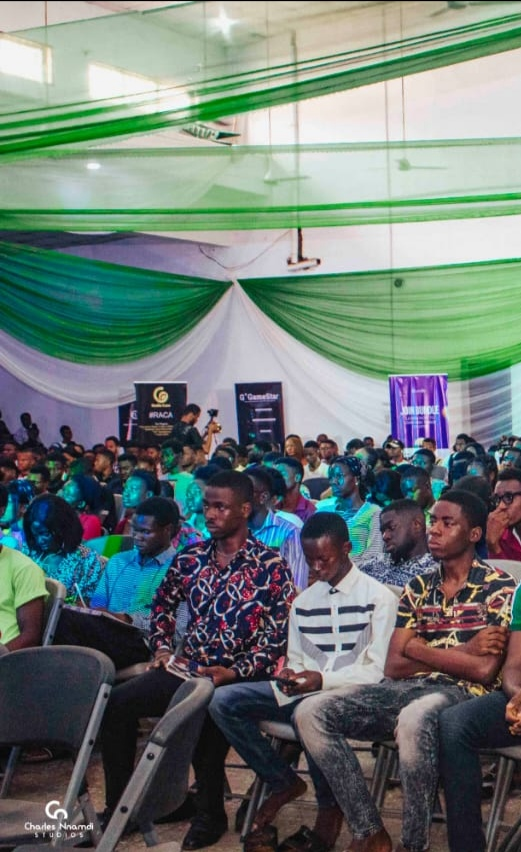
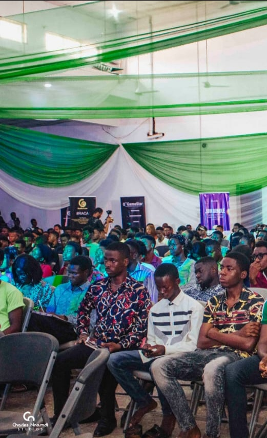

Blockchain UNN is community of digital enthusiast with a drive to educate, impact and develop members of the University community with both basic and advanced knowledge of crypto currency and blockchain, as well as it's technology and development in UNN/UNEC campuses.
Blockchain University of Nigeria, also known as BlockchainUNN was founded on 27th April, 2021 by Nduka Anthony and co-founders, Okoye Kevin Chibuoyim and Okechukwu Victor Alvan. Nduka Anthony is also the FTX UNN Campus Ambassador. Okoye Kevin is also the CEO and founder of Ginakev Digital Academy while Okechukwu Victor Alvan is the director of Alvan CryptoHub. The founder and co-founders are great men in the crypto space. They have insights on bringing this crypto knowledge to the eastern part of Nigeria.
Our goal is to bring the knowlegde of cryptocurreny and blockchain technology to the east and south east of Nigeria starting from the community members of University of Nigeria, Nsukka both in UNN/UNEC campuses. We also have a wide vision of being the best campus blockchain community in Africa.
We're going to basically educate our community members everything about blockchain technology and cryptocurrency. We would want our commmunity members to have knowledge of Business Management, Cryptocurrency Trading, Content Creation and Writing, Web Development, Blockchain Development, Web2, Web3, NFT and Graphics Designing, Decentralised Finance, Social Media Management and Blockchain Education.
 

Blockchain UNN is proudly sponsored by the following orgaizations: